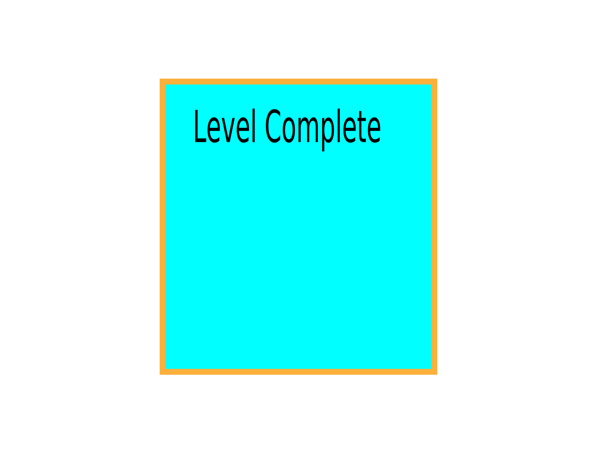
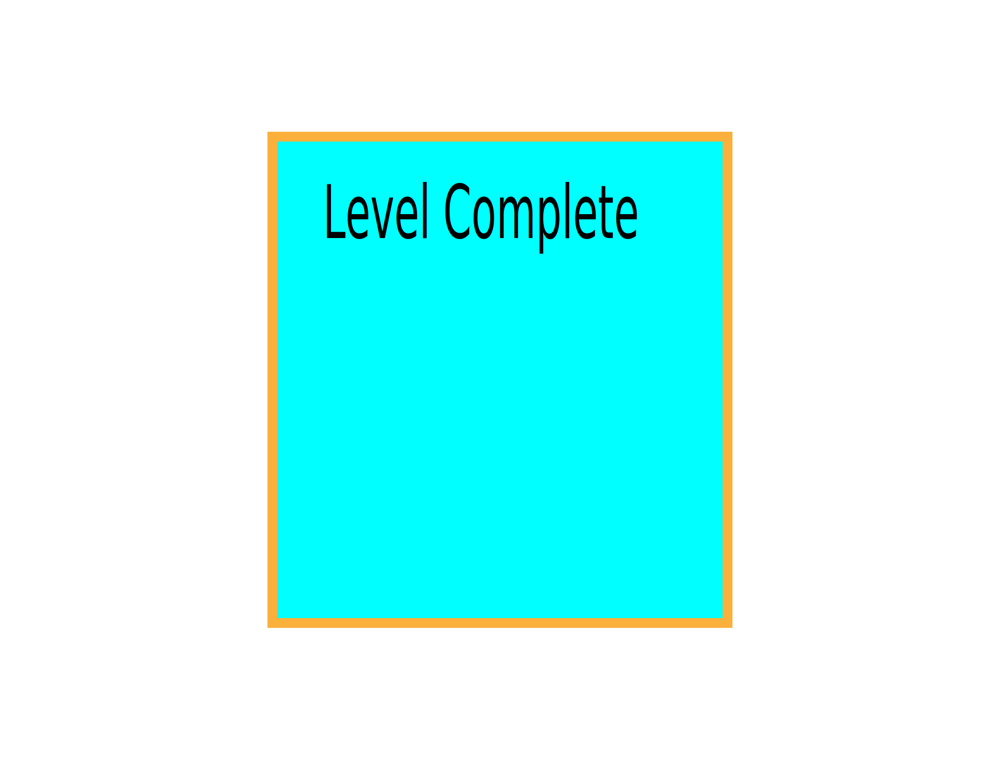

Tema 2
website
beskrivelse
For at opnå kompetencer indenfor website lærer jeg om arbejdsfiler og filformater til web. Vi udarbejder en website på basis af udleveret materiale. Det er en selvstændig opgave og jeg fokuserede på et historisk tilbageblik med personlige præferencer. Jeg lærte at bruge layoutdiagram og kodning i HTML, samt CSS udefra et wireframe. Opgave nummer:
process
layout diagram


wireferame
.png)


emnesite
beskrivelse
For at opnå kompetencer indenfor emnesite skal jeg vide noget om ophavsret, licenser og metadata. Dernæst kodning, tools, billedbehandling og udvikling af mock-ups. Jeg valgte at fokusere på futurisme og rummet. Det var en selvstændig opgave, og jeg arbejdede udefra eget materiale. Værktøjet var HTML, photoshop, moodboard, stilesite, wireframes og XD. Jeg researchede på fonte, billeder, design og udtryk. Dernæst udvælgelse og indarbejdning af sitet.
farver, typografi, marginer favicon Komposition/layout/grid Typografi og tekstlayout Billedstil/beskæring/farvejustering Gestalt Kontraster Opgave nummer:process

animation
I opgaven “animation” var målet et website med et interaktivt animeretspil af egen produktion. Dertil en dokumentation. I denne opgave skal jeg finde min egen rolle i designet, den interaktive proces, beslutningsprocessen og den forståelse, der skal være på plads omkring konventioner, prototypisk og testning. Der skal testes for brugeroplevelse, findes fotostil og billedbehandles i planlægning og produktion af indhold. Det var en selvstændig opgave, hvor jeg brugte følgende værktøjer: .mp3, .svg, CSS, JavaScript og illustrator. Jeg lærte at gå fra ide til skitse og udvikling. Udover figurelementer, baggrundsdesign og meget mere fra illustrator, så også genbrug fra Tema 3. Jeg lærte endelig at kunne udvikle mit eget spil. Javasciptet udfordrede mig en del, men jeg havde måske stillet for store krav til mig selv. Opgave nummer 04.04.01
tema 3
I Tema 3 lærte vi om research metoderne observation, interview og survey. Observation:Man holder øje med en situation eller objekt og noter interaktionerne og hændelserne der udspiller sig. interview:Målet er at samle baggrundsviden og fakta omkring den interviewet Person så man kan stille de rigtige spørgsmål og få nuanceret svar. survey:Det er en måde at få samlet en masse information på på engang Jeg valgte gå med observations metoden, hvor jeg interviewet en person der klikkede rundt på hjemmesiden for at købe tøj. måden det blev løst på , det var at jeg lavede en prototype 1 udfra UI kits i adobe xd, udfra struktur og navigation der linkede til 4 andre sider. moodboardet og styletilet blev lavet ud fra ide og struktur til mit shopconcept, der næst brugte jeg det til at finde min fotostil som blev udarbejdet i fotoshop. jeg brugte copy ogn mmicrocpoy til at finde ud af hvordan teksten bygges. det hele udmundede i en prototype 2 der eventuel blev den færdige side der skulle observeres, som udundede i en pitch til at løse den efterfølgende opgave på følgende måde (her demonstrerer du færdighed). Jeg valgte at bruge det princip til minløsning fremfor A & C fordi [...](her demonstrerer du kompetence).ITema Y (link)brugte jeg ogsålayoutprincipper, men jeg gjordedet anderledes. fokus: for dit samlede arbejde i teamet er brugergrænsefladen og brugeroplevelsen – dvs. design af UI og UX-elementer til din webshop.løsning
lærimgsmål
I opgaven “Løsning” var det målet at lave en side med tøj, finde fotostilarter. Det var en selvstændig opgave som jeg udførte ved at bruge…………. Hermed fik jeg anvendt moodboard, stiletitle, copy og mikrocopy til fremtidig projekt. Opgave nummer:
pitch
læringsmål
I opgaven “pitch” var det målet at fremlægge “Løsning”. Min rolle var mundtlig fremlæggelse og jeg brugte Powerpoint. Det var vigtig for mig at prøve at fremlægge, da jeg fysisk har store udfordringer i formidlingen. Opgave nummer 03.03.02.
process
webshop titel wolfgang prototype UX-designer mig selv illustration? UX-research Anslag En hjemmeside med bæredygtige t-shirt Status Mangler info omkring tøjet Den er mere organiseret Der er en mere fokuseret stil Udfordring At hjemmeside prototypen lever op til den skitserede. Informationer og indsigter fra researchen Ifølge Danmarks Naturfredningsforening er konventionel bomuld fyldt med sprøjtegift og indeholder giftige farvestoffer, som kan optages af huden. UX/UI-design – krop: løsning - ide (koncept og kreativ idé) UX/UI-design – krop: løsning - ide (koncept og kreativ idé) og XD-prototype Webshop og produkter Målgruppe USP/ salgsargument Produktegenskaber og fordele for kunder Designproces: skitse, moodboard, stile tile Gennemgang af XD-prototypen Uddybning af visuelt indhold og copy jeg har valgt at designe siden efter et dyr der hedder axolotl Dyret kan findes i forskellige farver så som brun, sort, albino og den mest udbredte farve lyserød. Den kan hele sine egne lemmer og undgå metamorphis Velkommen til wolffgang vi bestræber os på at være bæredygtige Det gå godt hånd i hånd med axolotlen, hvis habitat er truet. XD-prototype Webshop Personer der gerne vil ud med et budskab (eventuelt humoristisk) (Orginationer) produkter T-shirts Målgruppe Personer der gerne vil ud med et budskab (eventuelt humoristisk) (Orginationer) USP/ salgsargument Bestræber os på at sælge t-shirts af god kvalitet Produktegenskaber Bomuld Økologisk Bæredygtig Designproces: skitse, moodboard, stile tile Uddybning af visuelt indhold og copy 3.UX-test – hale: Konklusion og perspektiver Jeg skal blive bedre til at holde mig til min skitse Test (refleksion over tænke-højt-test) The Five Act interview Friendly welcome Hej test-person, jeg takker dig for at deltage i den her test. Du skal bare vide at jeg tester ikke dig, men mit design af hjemmeside. Context questions Hvor gammel er du? Hvor bor du? Hvad har du af interesse? Hvad går du af tøj? Går du op i bæredygtighed? Hvordan foretrækker du at shoppe Fremtidsperspektiver? Få inkorporeret dyrets egenskaber og usdseende i selve produktet
opgave
opgave beskrivelse
tema opgave
process


 



Tema 5
pilotsite
læringsmål
I opgaven “pilotsite” var målet en website, der præsenterer en video. Det var en selvstændig opgave, der blev lavet på baggrund af gruppeinterviews. Jeg anvendte bl.a. HTML, YouTube, layoutdiagram, webfront, VSS og premiere. Jeg lærte bl.a. om filformater, videoredigering, videokodning, formidling, videoplatforme, storyboard, interviewstil, klippeteori og b-Roll. Opgaven gav mig kompetencer til gruppearbejdet. Opgave nummer 05.01.02
process
@font-face { font-family: "proxima_novaregular"; src: url("proxima_nova_font-webfont.woff") format("woff"); font-weight: normal; font-style: normal; } layoutdiagram

redesign
læringsmål
I opgaven “pilotsite” var målet en website, der præsenterer en video. Det var en selvstændig opgave, der blev lavet på baggrund af gruppeinterviews. Jeg anvendte bl.a. HTML, YouTube, layoutdiagram, webfront, VSS og premiere. Jeg lærte bl.a. om filformater, videoredigering, videokodning, formidling, videoplatforme, storyboard, interviewstil, klippeteori og b-Roll. Opgaven gav mig kompetencer til gruppearbejdet. Opgave nummer 05.01.02
process
wireframe
_Side_1.jpg)
_Side_2.jpg)
_Side_3.jpg)
_Side_4.jpg)
_Side_5.jpg)
Sketch